Префектура Нара · Госэ · сакэ
Сакэ Kaze no Mori из Госэ: сакэварня среди рисовых террас и город, который ожил вокруг неё
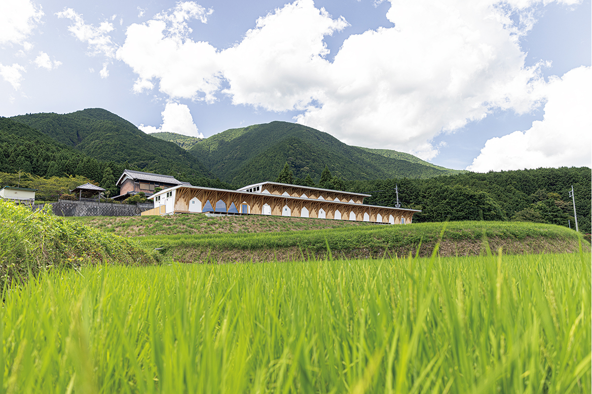
Сакэварню Yucho Shuzo знают по сакэ Kaze no Mori. Но её глава хочет большего, чем просто варить сакэ: сохранить рисовые террасы у горы Кацураги такими, какие они сейчас, ещё на сто лет вперёд.
Новый цех
Сакэварня среди рисовых полей
Госэ лежит на юге Нарской равнины, у подножия гор Кацураги и Конго. Здесь работает Yucho Shuzo, сакэварня, известная по марке Kaze no Mori. Она взялась за новое дело: среди рисовых террас на склонах горы Кацураги она построила второй цех, «Кацураги-санроку дзёдзосё». В разговоре его называют короче, «Санроку-гура», то есть «сакэварня у подножия».
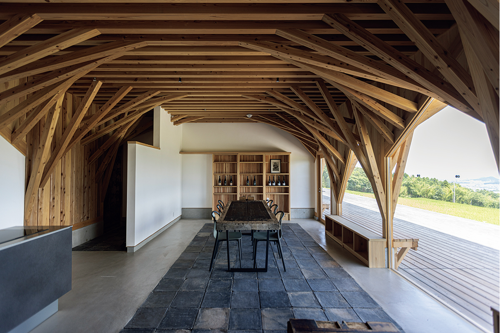
«Склоны Кацураги это родина акицухо, риса, на котором мы варим сакэ уже много лет. Всё началось со встречи с фермером, который выращивает его без пестицидов»
глава сакэварни Тёбэй Ямамото
Тёбэй Ямамото руководит сакэварней в тринадцатом поколении. Примерно в 2016 году тот самый фермер обратился к нему с просьбой. Без гербицидов на полях много ручной работы, одна прополка отнимает массу сил: нельзя ли позвать людей и работать вместе? Ямамото посоветовался с магазинами сакэ префектуры, и на поля пришло множество любителей сакэ в качестве волонтёров. Глядя, как люди с удовольствием работают на террасах, он почувствовал, какая сила скрыта в сельском хозяйстве.
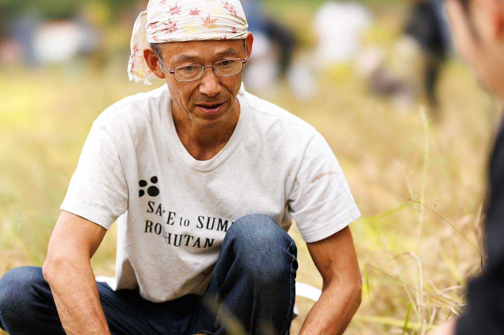
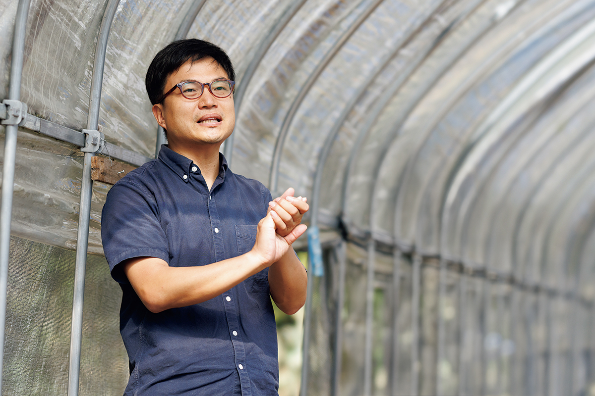
«Этот рис не похож на обычный сакэный: сакэ из него выходит свежим и чистым, рис почти не нужно шлифовать. Мне просто захотелось, чтобы эта энергия земли попала в сакэ. А если сакэварня будет стоять прямо здесь, через работу на полях можно показать людям красоту террас и всей этой сельской округи. Я был в этом уверен и решил построить "Санроку-гура"»
глава сакэварни
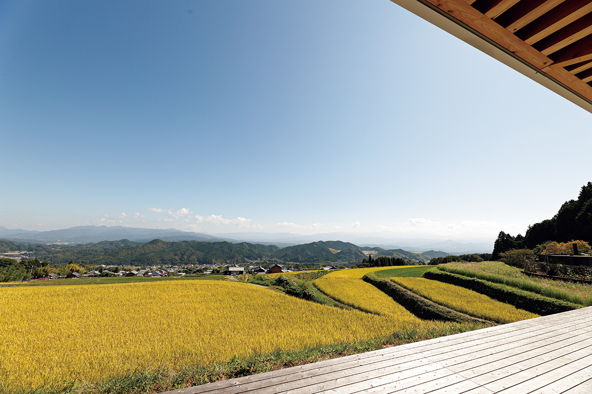
Всё из Нары
Материалы и мастера
Здание, в котором использованы свойства криптомерии из Ёсино, спроектировал местный архитектор. Плотников и штукатуров тоже позвали местных. И материалы, и люди здесь из Нары, и то, что так вообще можно построить, говорит о богатстве этих мест.
«Хотелось, чтобы пространство было по-настоящему нарским. В конце концов, я просто люблю свои места»
глава сакэварни
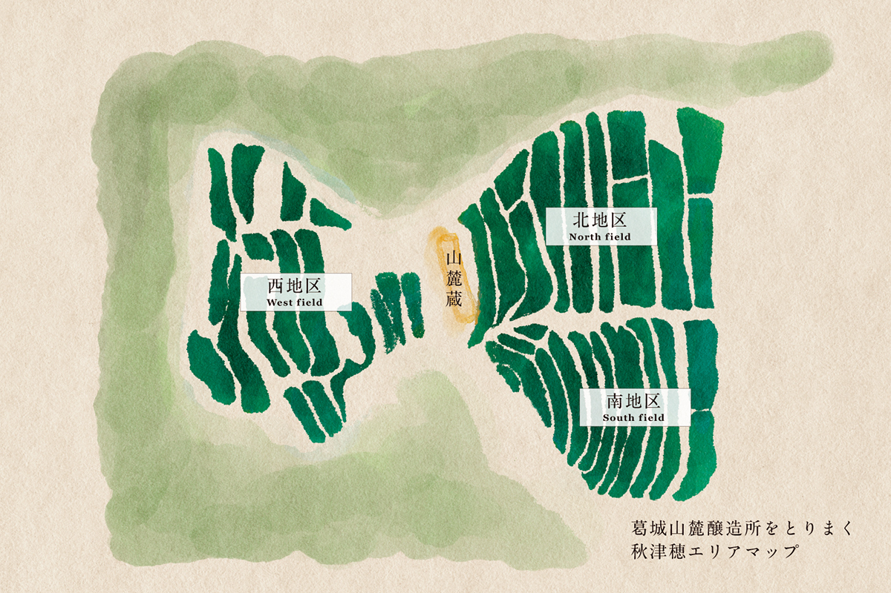
Сакэ из «Санроку-гура» назвали S Kaze no Mori. Рис шлифуют всего примерно до 90%, поэтому в сакэ остаются сложность и глубина, которые идут от земли.
«"Санроку-гура" нужна нам не только для сакэ. Сохранить величественный пейзаж у подножия Кацураги для нас такая же важная задача»
глава сакэварни
Индекс
Звёзды за будущее
Обычно сакэ выбирают по техническим показателям, например по степени сухости. У S Kaze no Mori есть ещё одна шкала, «мирай-сюдо», «индекс будущего». Она показывает, насколько бутылка помогает будущему рисовых террас и сельской округи. Чем больше звёзд, тем меньше нагрузка на природу и тем больше вклад в будущее. Когда это видно на этикетке, покупатель тоже начинает думать об устойчивом сельском хозяйстве.
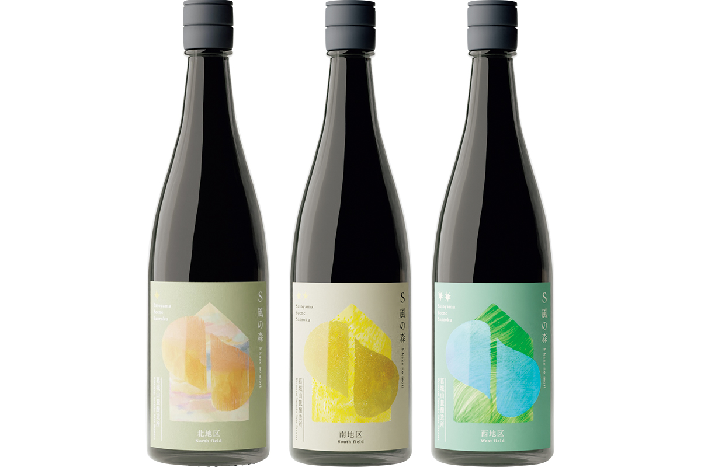
Звёзды распределяются так:
- S Kaze no Mori: с каждой бутылки 50 иен идут в фонд сельской округи (в 2026 году), сакэ варят на возобновляемой энергии.
- S Kaze no Mori с одной звездой: всё то же плюс меньше пестицидов, а значит меньше нагрузка на природу.
- С двумя звёздами: всё то же, что у первой ступени, но рис растят совсем без пестицидов и химических удобрений.
- С тремя звёздами: к условиям первой и второй ступеней добавляются живая, богатая почва и большой вклад в жизнь округи.
Сообщество
Как сакэ помогает фермерам
Сохранить пейзаж значит сохранить террасы и само земледелие. А для этого фермерам нужны условия, в которых им есть смысл выращивать рис. Поэтому Ямамото придумал своё устройство, «Сообщество сельской округи Kaze no Mori», которое поднимает доходы фермеров.
«Обычно магазин покупает сакэ у сакэварни. У нас магазин покупает рис прямо у фермера, мы варим из него сакэ, и магазин выкупает его снова. Цену риса мы ставим выше рыночной, и фермер получает больше. Когда магазин становится владельцем риса, он чувствует себя участником дела и сможет своими словами рассказать покупателям о "S Kaze no Mori" и о красоте этих мест»
глава сакэварни
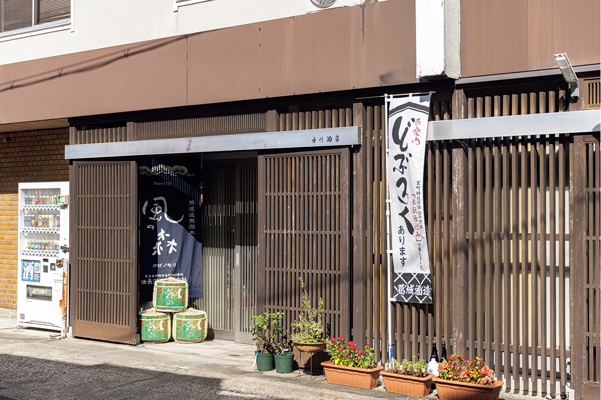
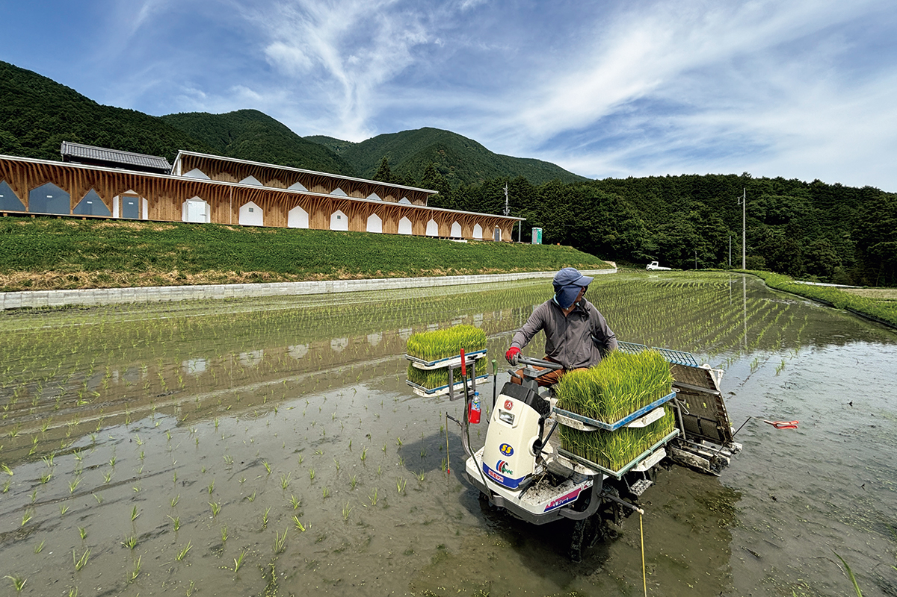
К тому же с каждой проданной бутылки 50 иен уходят некоммерческой организации, и покупатель, выпивая, поддерживает округу у подножия Кацураги.
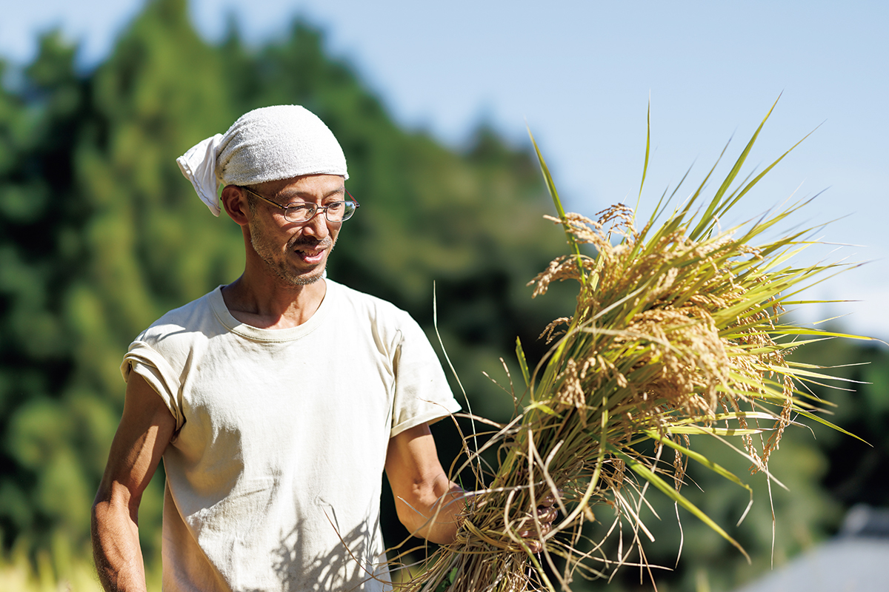
«Пить сакэ значит беречь исконный японский пейзаж»
глава сакэварни
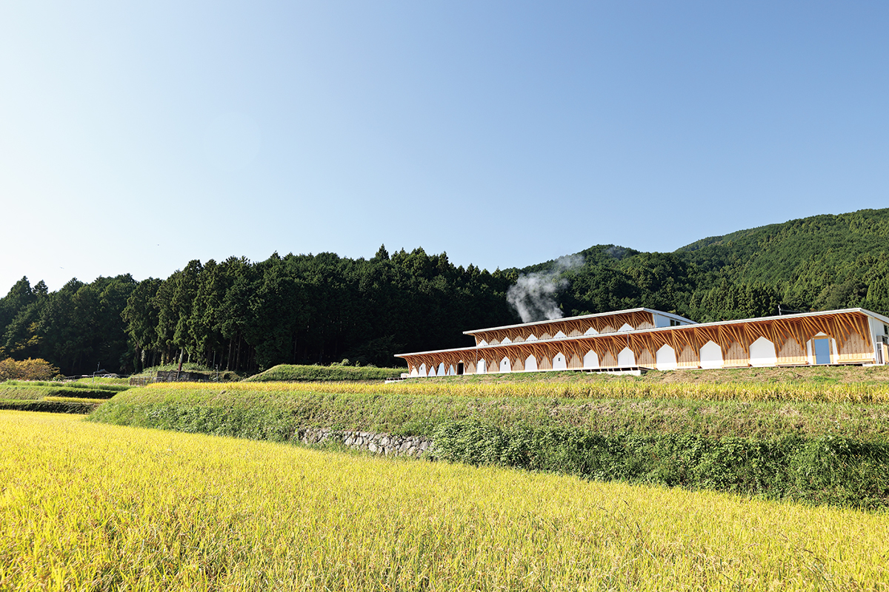
Город
Старый квартал Госэ оживает
Сакэварня стоит в квартале Госэ-мати. С начала эпохи Эдо, с XVII века, он был центром средней и южной части Нары, а к 2026 году здесь потихоньку начало происходить что-то новое.
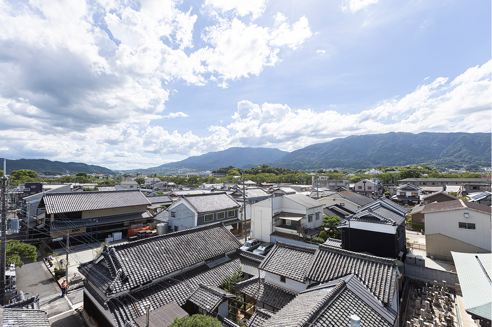
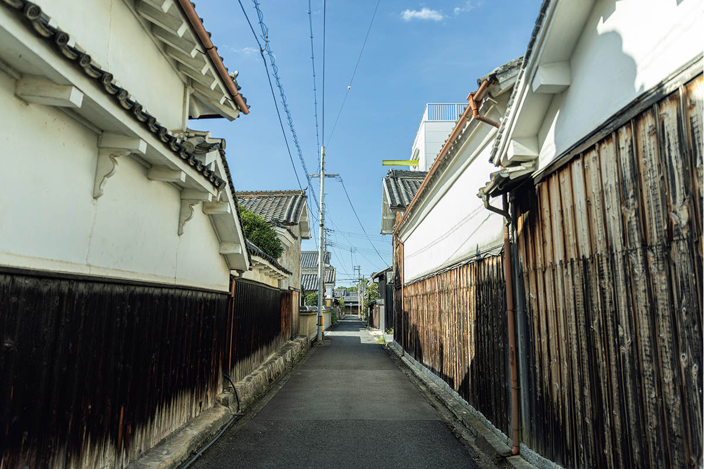
«В Наре есть компания narrative, которая возвращает к жизни исторические здания. Несколько лет назад она начала работать со старыми домами Госэ: открыла гостиницы RITA Gosemachi (теперь UHN Nara Mannenhitsu Hompo) и "Ядо Тяринко", баню "Госэ Такараю". Мы сами давно держим здесь сакэварню, поэтому вместе с другом, у которого тоже своя компания в Госэ, вложились в narrative. С тех пор, кажется, сюда и потянулись люди»
глава сакэварни
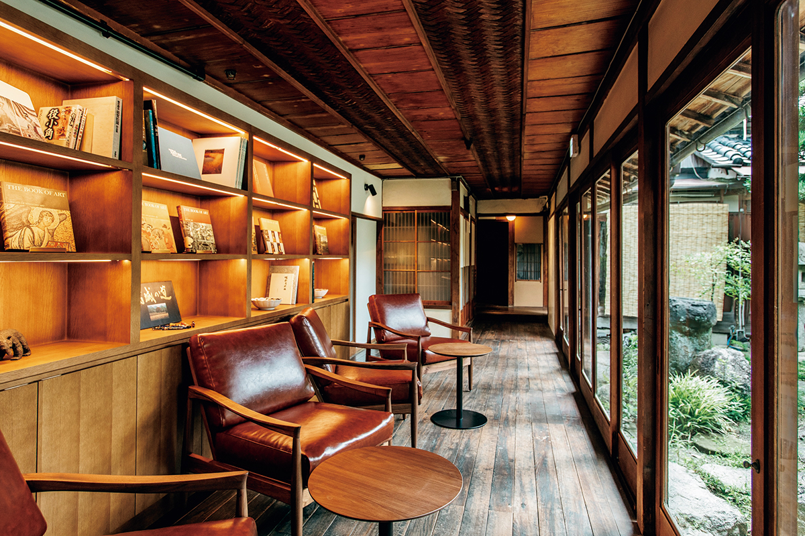
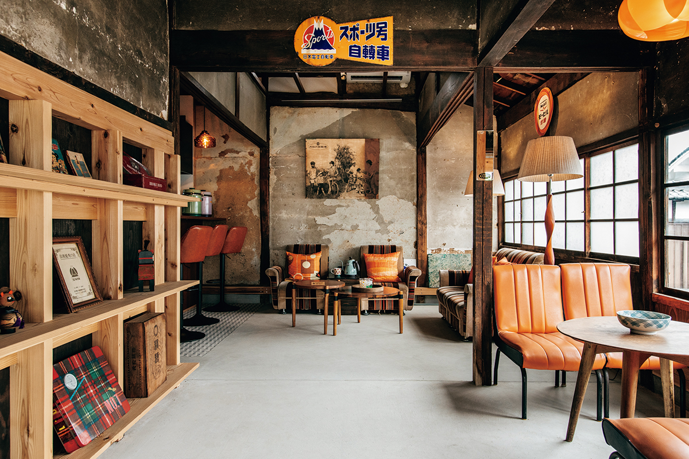
Сама Yucho Shuzo никого специально не зазывает. Она помогает городу, но остаётся сакэварней и каждый день занимается сакэ. Наверное, именно эта серьёзность и подкупает: в Госэ один за другим открывают свои дела мастера из самых разных областей.
Соседи
Шоколад, пирожные, французская кухня и джин
Например, Tatsunori Sato. Шоколатье давно любил Kaze no Mori, «слишком сильно», как он сам говорит, и открыл магазин рядом с сакэварней. Его бонбоны из шоколада с Kaze no Mori быстро заметили и в Японии, и за рубежом. Сам он ездит на террасы у подножия Кацураги помогать с рисом и стал в Госэ совсем своим.
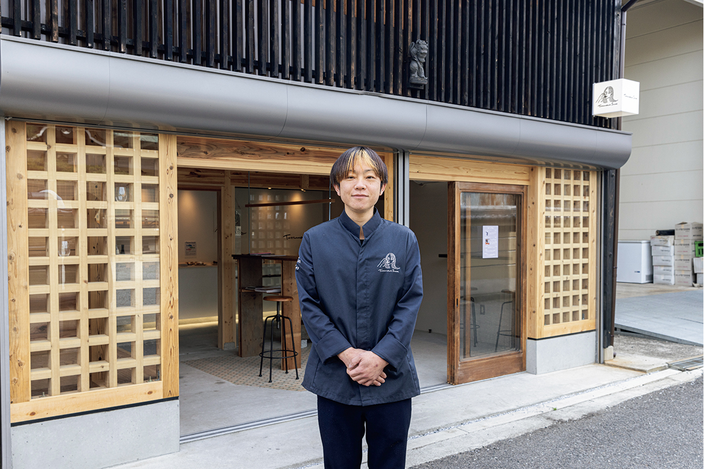
Кондитер Patisserie Petit Ami учился в Европе и вернулся в родной Госэ, чтобы открыть кондитерскую по всем правилам. Шеф-повар открыл на территории сакэварни ресторан à plus, отмеченный звездой: это французская кухня нового времени, которая идёт рядом с сакэ.
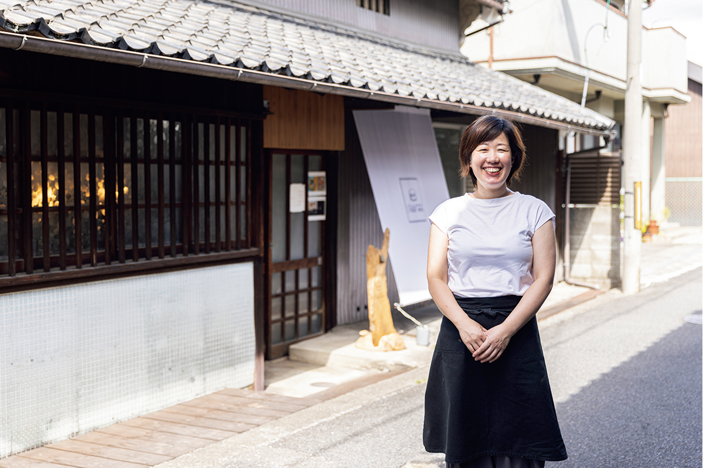
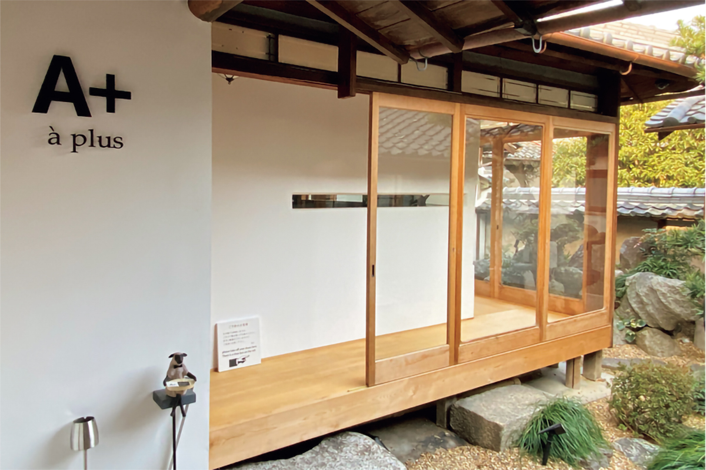
«Я говорил, что мы занимаемся только сакэ, но принять новые заведения мы, пожалуй, всегда были готовы. Некоторые, как наш шоколатье, приходят прямо в сакэварню. Тогда мы их выслушиваем, и если находим общий язык, сдаём пустующие амбары или дома-нагая. А когда доходит до перестройки, знакомим с архитектором, который проектировал "Санроку-гура". Говорим: рядом проектное бюро, очень советуем»
глава сакэварни
Архитектор работает с деревом и живёт в Наре, а его бюро стоит прямо по соседству с сакэварней, так что их связывает давнее доверие. Он проектировал Yamato Distillery, Tatsunori Sato и à plus. В этих пространствах видна фактура дерева, они тёплые, и людям в них спокойно.
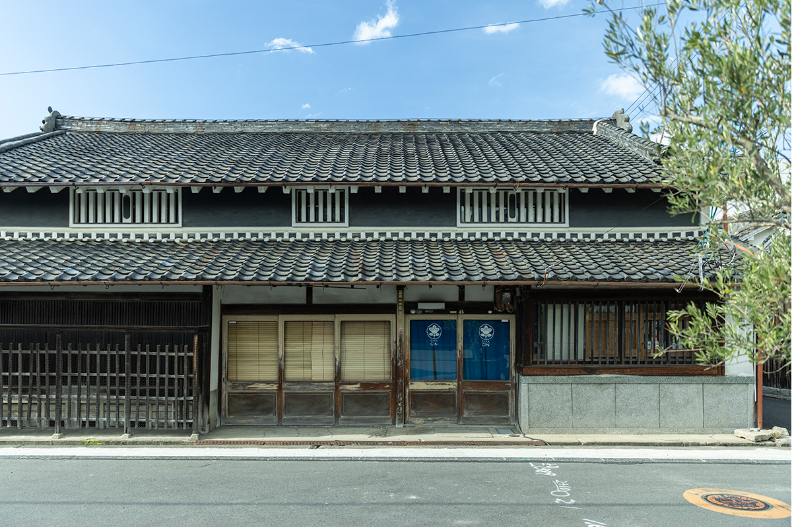
«Его здания разбросаны по всему Госэ, и поэтому город странным образом выглядит цельным. Как будто его воздух пропитал всё вокруг»
глава сакэварни
Магазин сакэ
И баня с 1916 года
Поэтому в последние годы в Госэ приезжают не только туристы, но и любители архитектуры.
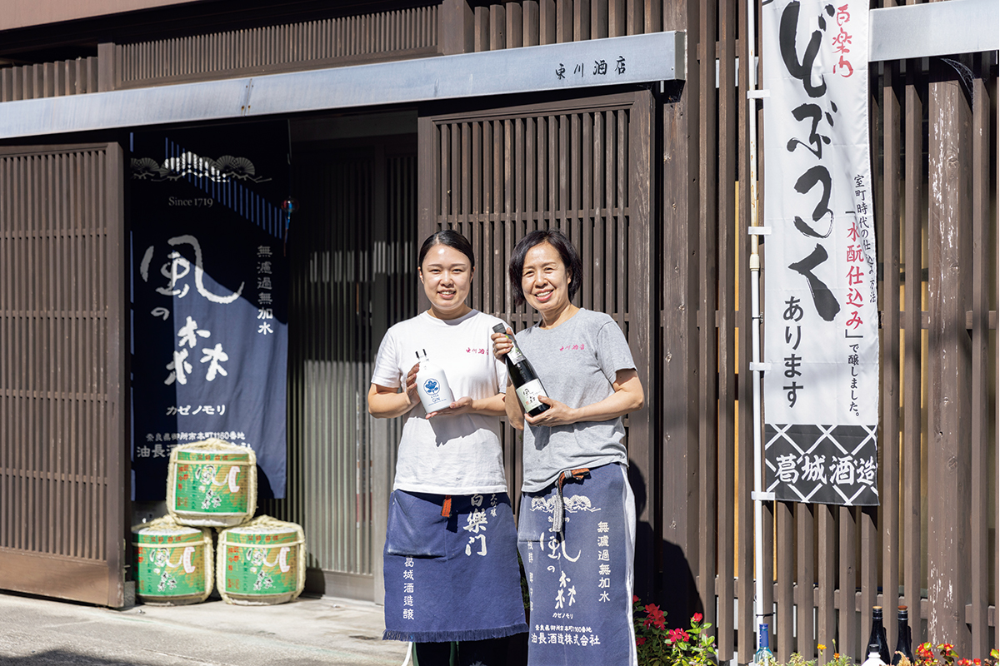
«Открывать дело в незнакомом городе всегда страшно. А здесь войти довольно легко. Люди хорошо связаны между собой, и мы с радостью подскажем и дом, и местных плотников, и мастеров»
глава сакэварни
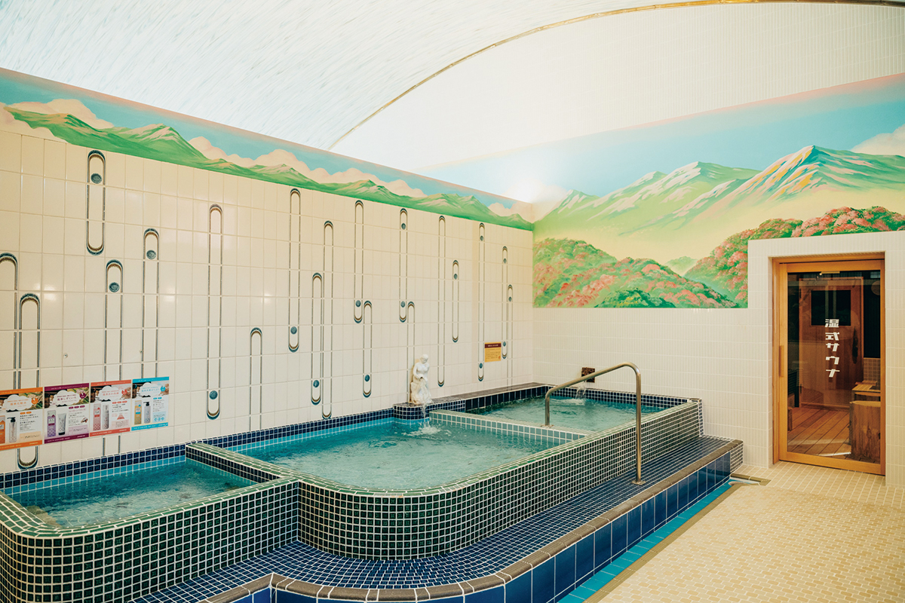
Здесь не компания строит туристическое место. Мастера собираются вместе, и каждый всё глубже копает в своём деле. Их увлечённость медленно расползается, как амёба, и из неё складывается притягательный город. Ямамото сравнивает это с букетом: Госэ это сцена, каждый на ней становится цветком, и вместе они собирают большой букет. По его словам, именно так и надо строить город в наше время.
«Я всех их искренне уважаю. Yucho Shuzo тоже нельзя отставать»
глава сакэварни
Похоже, в этом профессионализме и кроется секрет того, что людей тянет в Госэ.
UHN Nara Mannenhitsu Hompo (бывшая RITA Gosemachi)
- Адрес
- префектура Нара, Госэ, Ниси-мати, 1069
- Телефон
- +81 745-49-0823
«Ядо Тяринко»
- Адрес
- префектура Нара, Госэ, Камогути-тё, 1087
- Телефон
- +81 745-49-0842
Tatsunori Sato
Patisserie Petit Ami
à plus
Yamato Distillery
- Телефон
- +81 745-62-2047
Магазин сакэ «Хигасикава»
- Телефон
- +81 745-62-2335
«Госэ Такараю»
- Адрес
- префектура Нара, Госэ, Микуни-дори, 2-361-5